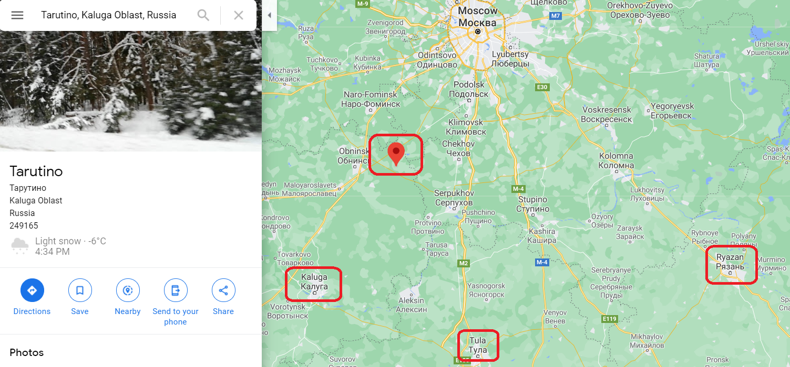
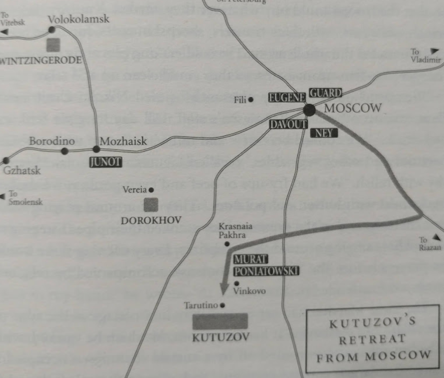
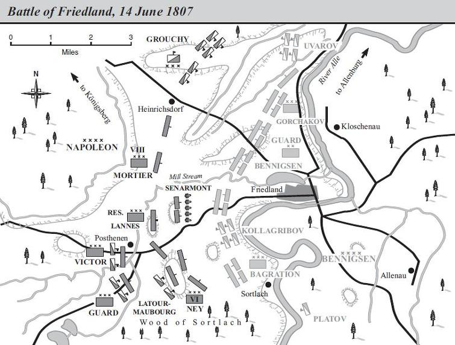
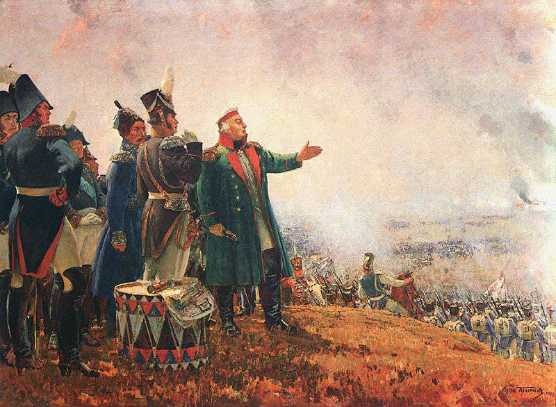
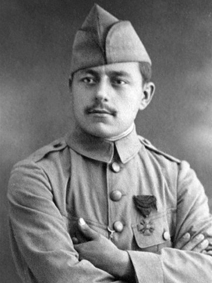
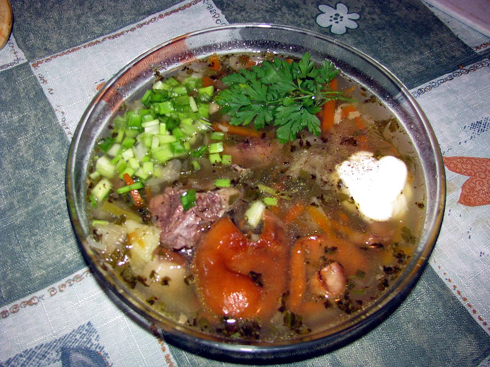
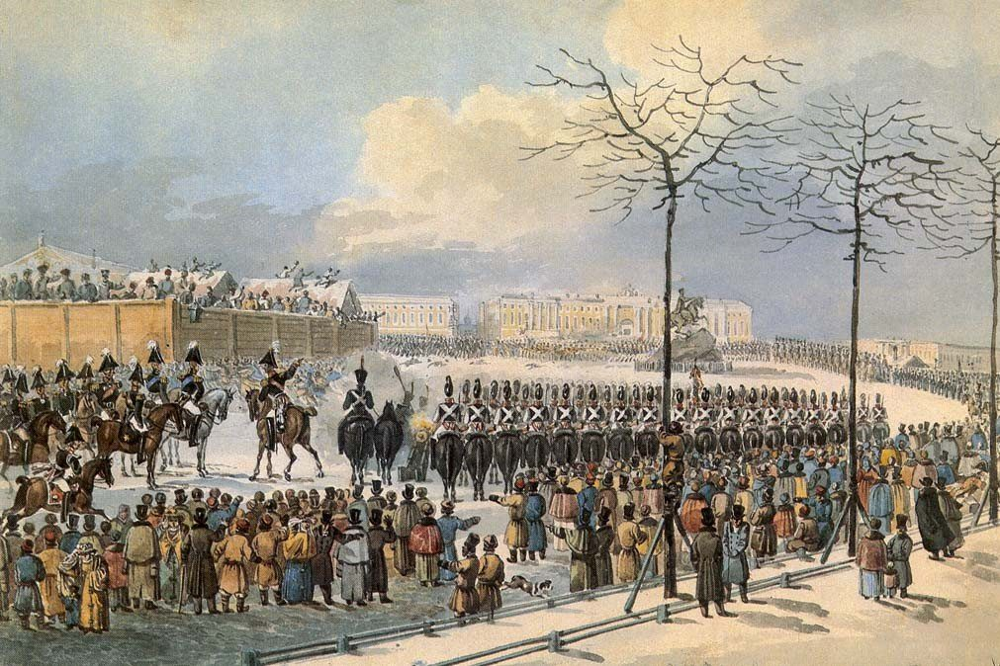

"우리 쿠투조프가 달라졌어요" - 양배추 수프와 반란의 씨앗
게시: 2021-02-22T06:30:22+09:00
나폴레옹과 알렉산드르가 제각각 번뇌에 사로 잡혀 있는 동안 전쟁의 피해는 러시아 농노들이 그대로 뒤집어 쓰고 있었습니다. 그런데 원래대로라면 러시아 농노들을 보호해줘야 할 러시아군은 무엇을 하고 있었을까요? 전에 보신 것처럼 쿠투조프는 모스크바 성벽의 서문을 통해 입성하여 동문을 통해 빠져나간 뒤, 남동쪽으로 뻗은 리아잔(Ryazan) 대로를 따라 그대로 약 100km의 거리를 직진했습니다. 아마 3일 정도 행군했을 것입니다. 그러더니 갑자기 '어, 쿠투조프에겐 다 계획이 있었구나' 싶은 조치를 취했습니다. 모스크바 시내를 관통하여 흐르는 모스크바(Moskva) 강은 리아잔 대로와 거의 평행으로 남동쪽으로 흘렀는데, 이 모스크바 강은 콜롬나(Kolomna) 인근에서 리아잔 대로를 관통하게 됩니다. 쿠투조프는 여기서 모스크바 강을 건너자마자 갑자기 90도 각도로 우회전하여 남서쪽으로 행군 방향을 바꿨습니다. 이건 나름대로 굉장히 대담한 행동이었습니다. 이는 프랑스군과의 거리를 다시 좁히는 일이기 때문이었습니다.

(모스크바 남동쪽에 있는 도시가 리아잔(Ryazan)입니다. 러시아에서는 모스크바에서 어디 도시로 향하느냐에 따라 도로명을 짓는 모양입니다. 그래서 여태까지 쿠투조프가 스몰렌스크에서 모스크바로 후퇴해오던 도로의 이름은 스몰렌스크 대로, 그리고 모스크바를 빠져나와 후퇴하던 도로는 리아잔 대로입니다. 아마도 그런 전통 때문인지, 지금도 모스크바에는 모스크바 역이 없고 대신 '레닌그라드 역', '벨로루시 역' 등이 있다고 합니다. 모스크바 남동쪽에 구글 위치 표시된 곳이 쿠투조프가 의도한 주둔지인 타루티노의 위치입니다.)
(정말 찾아보면 모스크바 시내의 기차역 이름은 그 철로의 종착지를 따라 지어진 것을 보실 수 있습니다.) 당시 러시아군은 누가 뭐래도 패퇴하는 중이었고, 병사들은 물론 장교들의 사기도 땅에 떨어진 상태였습니다. 게다가 연이은 후퇴로 인해 병사들의 규율이 많이 흐트러져 장교들의 명령을 병사들이 무시하는 일까지 슬슬 나타나고 있었고, 러시아 농민들을 약탈하는 일도 흔하게 일어나고 있었습니다. 심지어 정상적인 상태에서는 상상하기 힘든 일, 즉 교회를 약탈하는 일까지 심심찮게 일어났습니다. 보로디노 전투 이후 러시아군에는 탈영병과 낙오병이 속출했는데, 모스크바 시내를 관통하는 후툇길은 그야말로 대혼란의 연속이었기 때문에 그런 탈영과 낙오가 폭증했습니다. 모스크바를 벗어난 이후, 특히 멀리서도 눈에 보였던 모스크바 대화재를 목격하고는 '이제 러시아는 끝났다'라는 분위기가 온 부대를 사로잡았고, 그때 즈음해서는 이미 탈영과 낙오로 인한 비전투 손실이 1만을 넘어가는 상황이었습니다. 누가 봐도 러시아군은 제 풀에 무너지고 있었습니다. 이런 상황에서는 프랑스군으로부터 조금이라도 더 멀리 달아나야 할 것 같은데, 방향을 틀어 프랑스군의 턱밑인 모스크바 남쪽으로 향한다는 것은 보통 일이 아니었습니다.

(모스크바에서 후퇴하는 쿠투조프의 경로를 나타내는 그림입니다. 제가 대부분의 스토리를 그대로 가져오는 Adam Zamoyski의 책에 실린 지도입니다.) 이렇게 패퇴하는 러시아군에 대한 추격은 전혀 없었을까요? 있었습니다. 모스크바에 입성한 프랑스군은 그동안 하도 지치고 굶주렸기 때문이었는지 혹은 이제 러시아의 항복을 기다리기만 하면 된다고 생각해서였는지 쿠투조프의 러시아군을 더 추격하지 않고 있었습니다. 다만 프랑스군의 선봉을 맡은 뮈라는 약 2만의 선봉을 이끌고 이들을 추격하고 있었습니다. 쿠투조프는 전투에서는 몰라도 후퇴하는데 있어서는 정말 늙은 여우였습니다. 그는 모스크바 강을 건너자마자 본대만 남서쪽으로 방향을 틀게 하고는, 후위를 맡겼던 코삭 기병들에게는 뮈라의 추격대와 접점을 유지한 채 계속 리아잔 대로를 따라 후퇴하도록 했습니다. 뮈라로서도 숫적으로 훨씬 우세했던 러시아군을 추격하여 섬멸하겠다는 생각보다는 그냥 후퇴하는 러시아군이 어디로 후퇴하는지 관찰을 하겠다는 입장이었으므로 큰 긴장을 하지 않았고, 그래서 그런 얇팍한 술수에 속아 넘어가버렸습니다. 뮈라의 추격대의 숫자가 많지는 않았기 때문에 베니히센을 선두로 하는 러시아군 지휘관들은 이들을 맞이하여 싸워야 한다고 주장했습니다. 그러나 쿠투조프는 단호하게 후퇴를 명령했습니다. 베니히센은 폭발했고 많은 장교들이 뒤에서 쿠투조프는 '겁쟁이'라고 수군거렸습니다. 지금도 그렇지만 군인에게 있어서 겁쟁이라는 것보다 더 큰 욕은 없는 법입니다. 하지만 그동안 세상에 이렇게 덜떨어지고 게으른 사람이 있나 싶을 정도로 못난 모습만을 보여주던 쿠투조프는 사람이 확 변한 것 같았습니다. 일단, 위치 선정이 기가 막혔습니다. 그가 이렇게 군을 이끌고 위험한 방향 전환을 했던 이유는 모스크바에서 남쪽으로 약 120km 떨어진 타루티노(Tarutino)에 주둔하기 위해서였습니다. 이 곳은 여러가지 측면에서 매우 좋은 위치였습니다. 먼저 모스크바와의 거리가 3~4일 행군 거리로서 꽤 멀었기 때문에 혹시 나폴레옹이 습격을 해온다고 하더라도 중간 지대에 깔아놓은 척후병들로부터 충분히 사전 경고를 받을 수 있었습니다. 그리고 프랑스군의 후방 통신로, 즉 모스크바 서쪽 지역을 위협하기에도 좋은 위치일 뿐만 아니라, 바로 남쪽에 칼루가(Kaluga)와 툴라(Tula) 등의 공업지대로부터 무기와 탄약 뿐만 아니라 식량 등의 보급품을 조달하기에 매우 편리했습니다. 물론 러시아군 장성 모두가 그렇게 생각한 것은 아니었습니다. 특히 자신이야말로 총사령관이 되어야 한다고 줄창 생각했던 베니히센은 타루티노의 지형지물에 대해 트집을 잡으며 이 곳에서 보루를 쌓고 참호를 파는 것은 모조리 쓸모없는 짓이라고 쿠투조프에게 항의했습니다. 그러나 쿠투조프는 이렇게 맞받아치며 자신이 모든 책임을 지는 총사령관임을 분명히 했습니다. "프리틀란드에서 당신이 정했던 위치는 당신에게나 족했을 거요. 난 여기가 마음에 들고 우리는 여기에 주둔할 것이오. 이유가 뭔지 아시오? 내가 총사령관이고 내가 이 모든 것에 대해 책임을 지는 사람이기 때문이오."

(1807년 6월 프리틀란드 전투의 상황도입니다. 지도를 보시면 눈에 확 들어오는 것이 러시아군이 좁은 장소에 배수의 진을 치고 있다는 점이지요. 저 전투는 여태까지 나폴레옹과 잘 대치하던 베니히센이 한순간 과욕을 부렸다가 영혼까지 털려버린 전투였습니다.) 실제로 타루티노에 자리를 잡은 러시아군은 눈에 띄게 상태가 좋아졌습니다. 무엇보다 여기에서 비로소 풍족한 보급을 받고 앞으로 있을 전투에 대비하여 부대를 정비할 수 있었습니다. 주변 농촌에서 달걀과 우유, 빵 등의 식량이 쏟아져 들어왔습니다. 만족스러운 수준은 아니었지만 새로 징집된 농노들도 속속 캠프에 도착하여 결원이 많았던 부대들을 보충했습니다. 남쪽 칼루가와 툴라에서는 대포와 머스켓 소총 등의 무기와 탄약이 속속 도착하여 그런 신병들을 무장시키고 손실된 장비를 보충하는데도 별 무리가 없었습니다. 무엇보다 이렇게 요새화된 진지를 꾸며 놓으니, 주변 도시의 상인들이 짐마차를 끌고와 물건을 팔기 시작했고 당장은 없는 물건에 대해서도 주문 예약을 받았습니다. 쿠투조프는 향후 충분한 보상을 약속하면서 그런 상인들에게 병사들의 두꺼운 군복, 외투, 장갑과 장화 등 매서운 겨울 추위에 대비한 온갖 월동 장비류를 잔뜩 주문했습니다. 이렇게 월동 준비를 일찍부터 시작한 것은 누가 뭐래도 나폴레옹에 비해 쿠투조프가 뛰어난 전략적 안목을 가지고 있었다고 할 만한 부분이었습니다. 이제 막 징집된 신병들에게는 기초적인 제식 훈련과 무기 조작법 등의 훈련이 이루어졌는데, 특기할 만한 점은 평상시의 러시아군에서처럼 쓸데없는 군기로 병사들을 괴롭히는 일이 싹 사라졌다는 것이었습니다. 이는 사기 저하로 인해 명령 불복종 분위기가 짙던 여태까지 후툇길에서의 분위기가 이어진 탓도 꽤 컸습니다. 덕분에 제식 훈련도 실질적인 전장에서의 부대 전술에 필요한 것에만 집중되었고, 보기에는 좋을지 몰라도 실전에서는 아무 짝에도 쓸모가 없던 연병장 사열을 위한 줄맞춰 행군 같은 훈련은 없었습니다. 복장도 마찬가지였습니다. 영국군도 그랬습니다만, 러시아군도 평소에 가슴을 가로지르는 십자혁대(crossbelt)를 하얗게 유지하기 위해 백토(pipeclay)로 닦는 등 온갖 쓰잘데기 없는 일로 스트레스를 받아야 했습니다. 그러나 타루티노에서는 더 이상 그런 일이 없었습니다. 정식 군복 외투가 아니더라도 농부용 외투이건 망토이건 몸을 따뜻하게 해주는 것이면 병사들이 무엇을 입던 간에 장교들은 지적하지 않았습니다. 병사들은 보기에는 좋을지 몰라도 불편하기만 하던 원통형 군모인 샤코(shako)를 벗어던지고 주로 작업을 할 때 쓰던 부드러운 천으로 만든 납작한 활동모(forage cap)를 썼습니다. 이럴 수 있었던 것은 총사령관인 쿠투조프부터가 화려한 장군복 대신 후줄근한 녹색 외투와 납작한 활동모를 즐겨 썼기 때문이었습니다. 결국 이 모든 긍정적인 변화의 중심에는 쿠투조프가 있었습니다.

(녹색 외투와 납작한 활동모는 나폴레옹의 회색 코트와 삼각모처럼 쿠투조프의 트레이드 마크입니다.)

(이건 미군 사진은 아닙니다만, 제2차 세계대전 때 미군도 많이 쓰던 활동모입니다. 이 모자의 일반적 명칭 forage cap입니다.) 그 결과 러시아군의 사기는 나날이 좋아졌습니다. 특히 먹을 것이 풍부했습니다. 불만이 많았던 베니히센과는 달리, 베니히센의 참모였던 두르노보(Nikolai Dmitrievich Durnovo)라는 장교는 당시 타루티노에서의 생활에 대해 매일매일이 즐거웠다고 적었습니다. 다른 장교인 미타레프스키(Nikolai Mitarevsky)도 이렇게 적고 있습니다. "우리는 쇠고기 스튜를 끓였고 양배추와 사탕무, 각종 채소로 신맛이 나는 수프도 종종 끓였다. 쇠고기 볶음과 닭볶음도 먹었고 버터와 감자를 넣은 메밀죽도 먹었다."

(사진은 러시아의 양배추 수프인 쉬(shchi)입니다. 9세기 경 동로마제국, 즉 비잔티움으로부터 양배추가 우크라이나에 도입되면서 생겨난 요리라고 합니다.) 러시아군의 이러한 분위기 변화는 장교들에게도 영향을 주었습니다. 병사들처럼 장교들도 보기에는 멋있지만 사실은 거추장스러운 금빛 견장과 장식줄, 화려한 색상의 장식용 띠(sashes) 같은 것들을 군복에서 떼어냈습니다. 부대 내에서 번쩍거리는 것이라고는 머스켓 소총과 총검, 장교들의 기병용 군도 밖에 없었습니다. 그리고 장교들은 여태까지의 후퇴와 그에 따른 사기 저하 때문에 과거에 비하면 병사들의 눈치를 좀 볼 수 밖에 없는 상태였는데, 그래서 평상시에는 같은 인간으로 대우하지 않던 병사들과 좀더 이야기를 자주 하게 되었습니다. 특히 어차피 군 경험이 없기는 피차 마찬가지였던 젊은 장교들은 여기서 처음으로 농노 출신의 병사들과 함께 군 경험을 쌓아가면서 그들을 자신들과 동일한 인간으로 보기 시작했습니다. 이때의 젊은 장교들의 경험은 훗날 데카브리스트(Decembrist, 러시아어로는 декабрист, dekabrist)의 반란을 일으키는 씨앗이 됩니다.

(1825년 상트 페체르부르그에서의 데카브리스트 반란입니다.) Source : 1812 Napoleon's Fatal March on Moscow by Adam Zamoyski
www.napolun.com/mirror/napoleonistyka.atspace.com/Russian_infantry.htm
en.wikipedia.org/wiki/Battle_of_Tarutino
en.wikipedia.org/wiki/Forage_cap